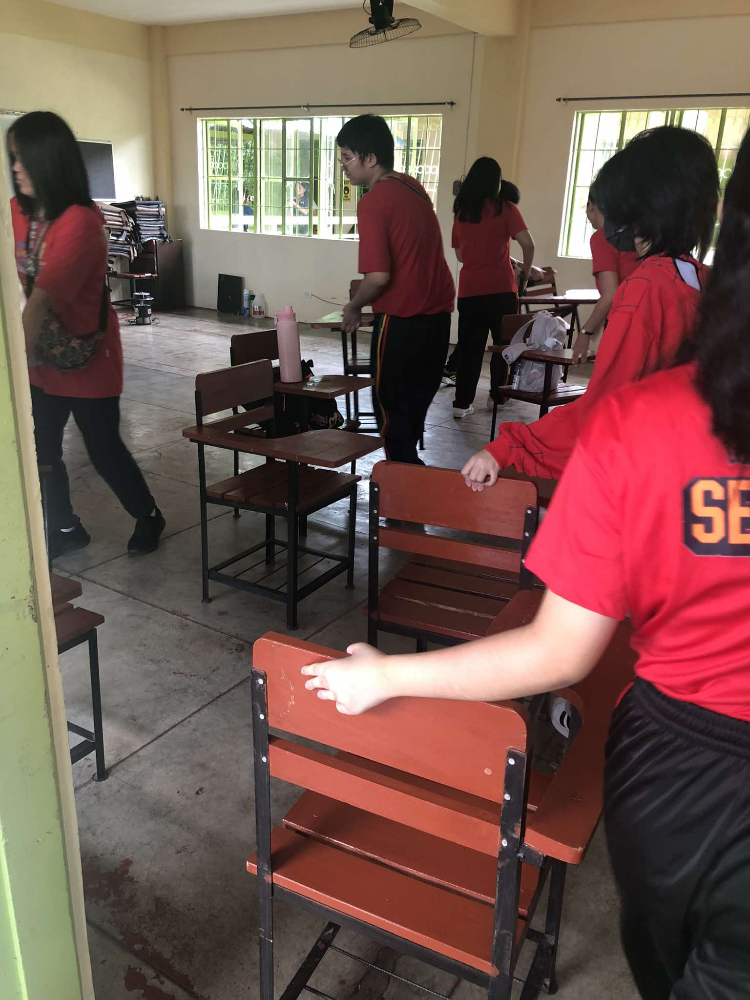
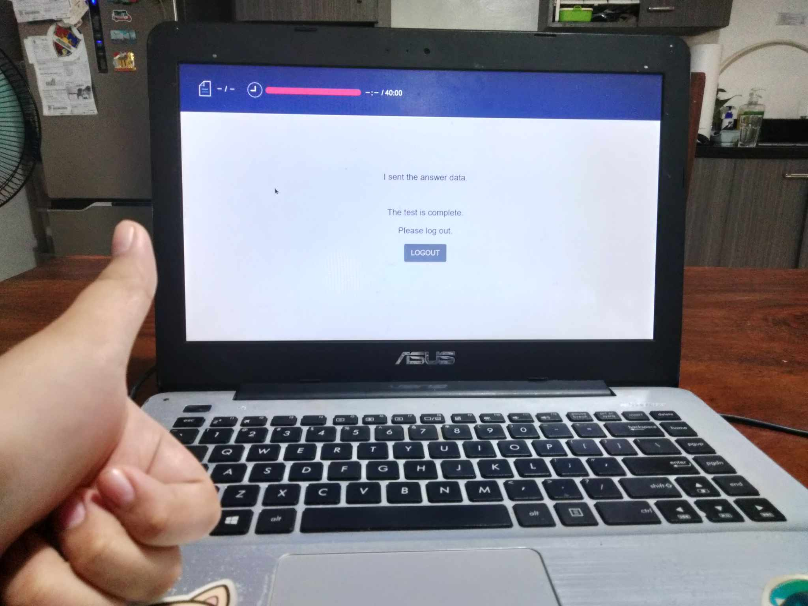

I love the colors red and purple, but when mixed together, I don't like it that much.
I tend to feel weird or awkward sometimes when I talk to people who i'm not super close with , but I don't mind!
I like making friends especially when they have the same interests as me!
| hobbies! |
|
likes! |
|
|---|---|
| DISLIKES! |
|
| fave songs! | their artists! |
|---|---|
| knee socks | arctic monkeys |
| r u mine? | arctic monkeys |
| apocalypse | cigarettes after sex |
| jjam | stray kids |
| runners | stray kids |
| mundo | iv of spades |
| Here are some of my favorite YouTube videos! |
| Informative vids I like! | |
|---|---|
| playlists! |
| hi, mrs. uminga! i hope that was informative! ʚ(｡˃ ᵕ ˂ )ɞ |
first quarter photos ᶻ ğ—“ ğ° .áŸ
| brigada! 07.23.24 A fun day where we met our advisors for the first time and cleaned our room! |
 |  |
 |
 |
|---|
| first day! 07.29.24 I saw my friends again during the first day of Grade 9! We met new teachers, and new classmates in Fairness! |
 |
|---|
| science human simulation! 08.6.24 a group performance task where we had to do a human simulation of the respiratory and circulatory system! It was so so fun! |
 |
|---|
| foundation day! 08.26.24 Celebration of LPSci's 15th birthday! |
 |
|---|
| filipino debate! We had a debate against each other in Filipino! Super nerve-wracking! |
 |
 |
|---|
| async classes! a compilation of pics I submitted during async classes! |
 |  |
 |
|---|---|---|---|
 |
 |
 |
 |
| lipunang sibil presentation! 09.20.24 An esp presentation where we had to make our own small institute/organization! I made our oslo paper aka the pic on the right! |
 |
 |
|---|
| periodicals! the most special week of a quarter! |
 |
|---|
short quiz ⋆ ˚｡⋆à¨à§Ëš
| a short and fun quiz about myself before we head to the reflection! (〃´∀｀) |
|
2. When is my birth year? (scroll for options!) |
|
3. Select my favorite songs! love potions runners sweet why'd you only call me when you're high? knee socks apocalypse |
|
4. Which genre of books do I like? (i like two!) |
|
5. What are my favorite colors? |
𓆩♡𓆪 reflection 𓆩♡𓆪
| The first quarter of ICT 9 was really interesting! Though I learned a lot, I definitely had some hard time too. Especially with the Hands-ons, since the time pressure was so nerve-wracking, so I ended up failing most of my performance tasks. Either way, I did learn more than I anticipated and I really like the finished outputs whenever I successfully create a webpage! I hope to have a better time next Second quarter! |